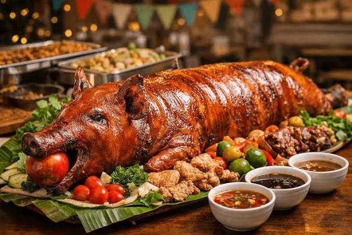
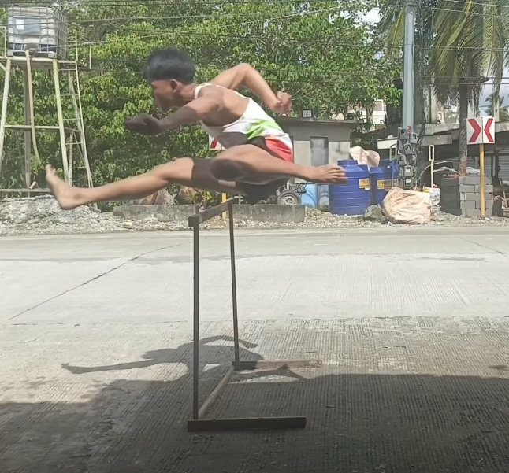
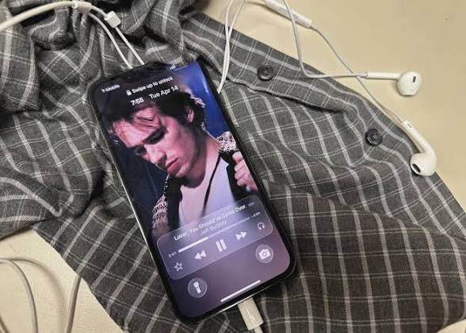

Favorites
Favorite Food
I love eating my favorite foods, humba and lechon, together with my family.
Favorite Sports
I enjoy running and competing in track events, especially the 200m sprint and 110m hurdles.
Favorite Music
I enjoy listening to music during my free time. It helps me relax and enjoy my day.
Favorite Movies
I enjoy watching Filipino movies and dramas during my free time.